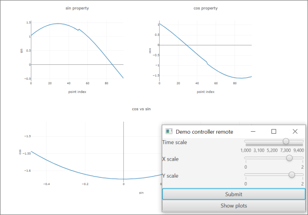

Controls.kt
Controls.kt (former DataForge-control) is a data acquisition framework (work in progress). It is based on DataForge, a software framework for automated data processing. This repository contains a prototype of API and simple implementation of a slow control system, including a demo.
Controls.kt uses some concepts and modules of DataForge,
such as Meta (tree-like value structure).
To learn more about DataForge, please consult the following URLs: * Kotlin multiplatform implementation of DataForge * DataForge documentation * Original implementation of DataForge
DataForge-control is a Kotlin-multiplatform application. Asynchronous operations are implemented with kotlinx.coroutines library.
Materials and publications
- Video - A general overview seminar
- Video - A seminar about the system mechanics
- Article - A Novel Solution for Controlling Hardware Components of Accelerators and Beamlines
Features
Among other things, you can: - Describe devices and their properties. - Collect data from devices and execute arbitrary actions supported by a device. - Property values can be cached in the system and requested from devices as needed, asynchronously. - Connect devices to event bus via bidirectional message flows.
Example view of a demo:

Documentation
Modules
controls-core
Core interfaces for building a device server
Maturity: EXPERIMENTAL
Features: - device : Device API with subscription (asynchronous and pseudo-synchronous properties) - deviceMessage : Specification for messages used to communicate between Controls-kt devices. - deviceHub : Grouping of devices into local tree-like hubs. - deviceSpec : Mechanics and type-safe builders for devices. Including separation of device specification and device state. - deviceManager : DataForge DI integration for devices. Includes device builders. - ports : Working with asynchronous data sending and receiving raw byte arrays
controls-magix
Magix service for binding controls devices (both as RPC client and server)
Maturity: EXPERIMENTAL
Features: - controlsMagix : Connect a
DeviceManagewith one or many devices to the Magix endpoint - DeviceClient : A remote connector to Controls-kt device via Magix
controls-modbus
A plugin for Controls-kt device server on top of modbus-rtu/modbus-tcp protocols
Maturity: EXPERIMENTAL
Features: - modbusRegistryMap : Type-safe modbus registry map. Allows to define both single-register and multi-register entries (using DataForge IO). Automatically checks consistency. - modbusProcessImage : Binding of slave (server) modbus device to Controls-kt device - modbusDevice : A device with additional methods to work with modbus registers.
controls-opcua
A client and server connectors for OPC-UA via Eclipse Milo
Maturity: EXPERIMENTAL
Features: - opcuaClient : Connect a Controls-kt as a client to OPC UA server - opcuaServer : Create an OPC UA server on top of Controls-kt device (or device hub)
controls-pi
Utils to work with controls-kt on Raspberry pi
Maturity: EXPERIMENTAL
controls-ports-ktor
Implementation of byte ports on top os ktor-io asynchronous API
Maturity: PROTOTYPE
controls-serial
Implementation of direct serial port communication with JSerialComm
Maturity: EXPERIMENTAL
controls-server
A combined Magix event loop server with web server for visualization.
Maturity: PROTOTYPE
controls-storage
An API for stand-alone Controls-kt device or a hub.
Maturity: PROTOTYPE
demo
Maturity: EXPERIMENTAL
magix
Maturity: EXPERIMENTAL
controls-storage/controls-xodus
An implementation of controls-storage on top of JetBrains Xodus.
Maturity: PROTOTYPE
demo/all-things
Maturity: EXPERIMENTAL
demo/car
Maturity: EXPERIMENTAL
demo/echo
Maturity: EXPERIMENTAL
demo/magix-demo
Maturity: EXPERIMENTAL
demo/many-devices
Maturity: EXPERIMENTAL
demo/mks-pdr900
Maturity: EXPERIMENTAL
demo/motors
Maturity: EXPERIMENTAL
magix/magix-api
A kotlin API for magix standard and some zero-dependency magix services
Maturity: EXPERIMENTAL
magix/magix-java-endpoint
Java API to work with magix endpoints without Kotlin
Maturity: EXPERIMENTAL
magix/magix-mqtt
MQTT client magix endpoint
Maturity: PROTOTYPE
magix/magix-rabbit
RabbitMQ client magix endpoint
Maturity: PROTOTYPE
magix/magix-rsocket
Magix endpoint (client) based on RSocket
Maturity: EXPERIMENTAL
magix/magix-server
A magix event loop implementation in Kotlin. Includes HTTP/SSE and RSocket routes.
Maturity: EXPERIMENTAL
magix/magix-storage
Magix history database API
Maturity: PROTOTYPE
magix/magix-zmq
ZMQ client endpoint for Magix
Maturity: EXPERIMENTAL
magix/magix-storage/magix-storage-xodus
Maturity: PROTOTYPE
demo module
The demo includes a simple mock device with a few properties changing as sin and cos of
the current time. The device is configurable via a simple TornadoFX-based control panel.
You can run a demo by executing application/run Gradle task.
The graphs are displayed using plotly.kt library.